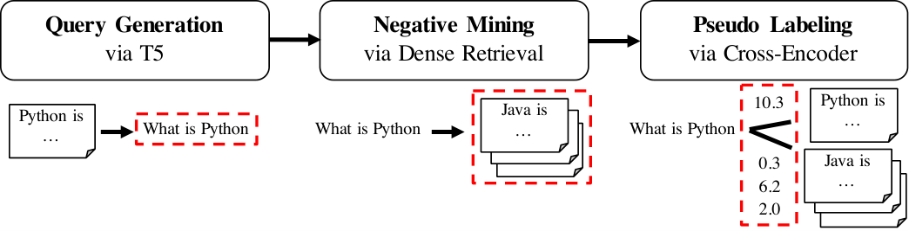
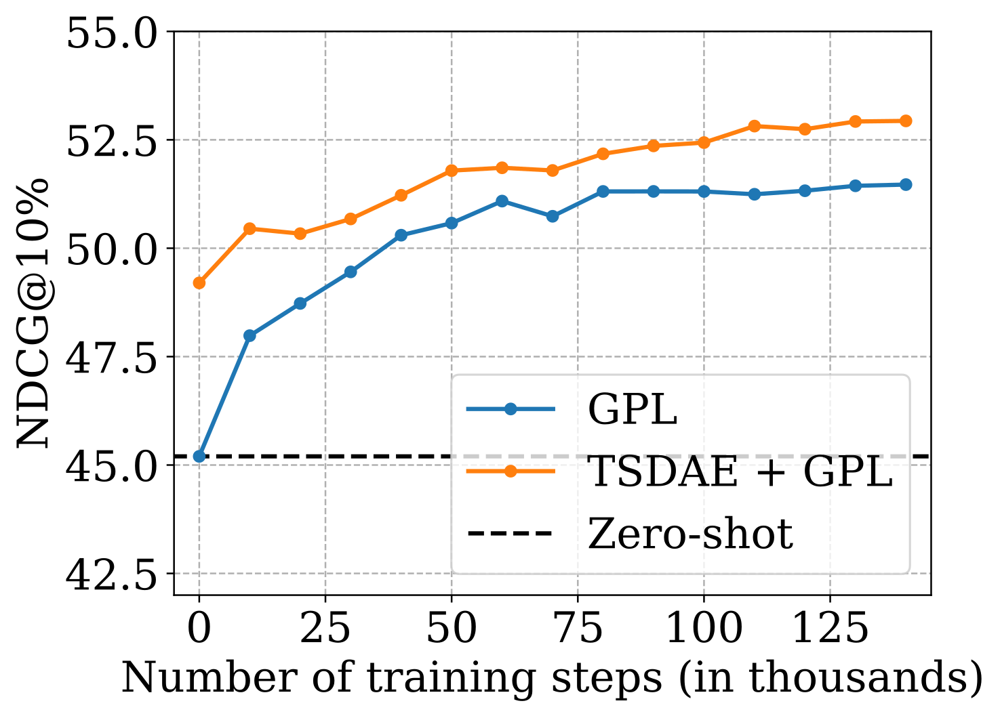
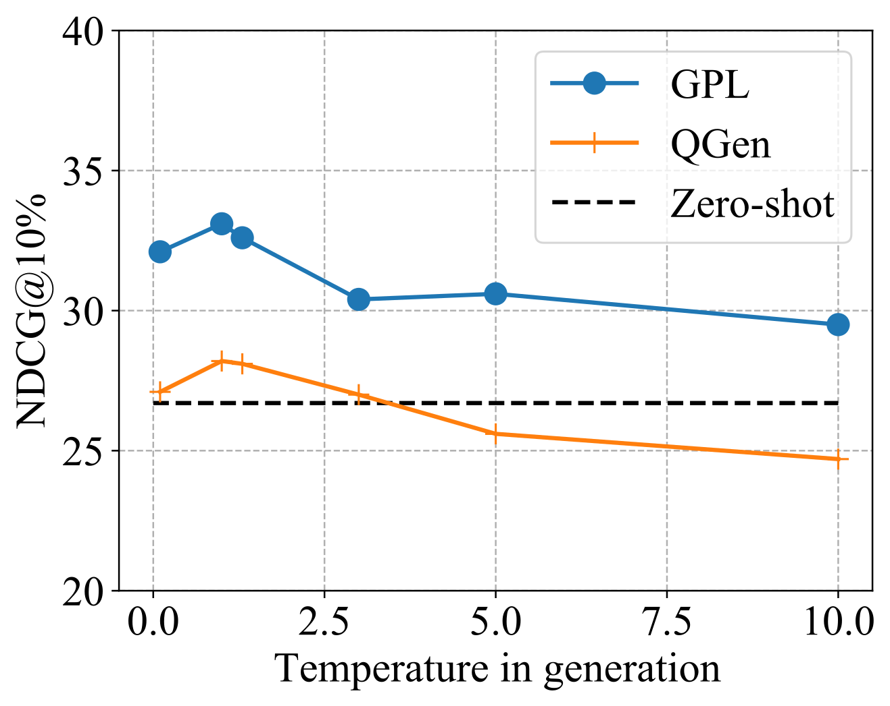

GPL 详解：用生成查询和交叉编码器间隔做稠密检索的无监督域适应¶
paper：GPL: Generative Pseudo Labeling for Unsupervised Domain Adaptation of Dense Retrieval（Wang, Thakur, Reimers, Gurevych；arXiv:2112.07577v3，2022-04-25） code：UKPLab/gpl backbone：学生为 DistilBERT 双编码器；查询生成用 MS MARCO 上的 DocT5Query（T5）；教师为 ms-marco-MiniLM-L-6-v2 交叉编码器；难负例挖掘用 msmarco-distilbert-base-v3 与 msmarco-MiniLM-L-6-v3 date：2021-12 首发，v3 为 2022-04-25 modality：文本稠密检索（一阶段双塔；目标域只要无标注段落） languages：英文评测（BeIR 中六个领域专用集，附录扩到全部 18 个集）
全文逐段中英对照见同目录 zh.md。本文按方法把流水线、两个损失和表 1–11 的口径写清，数字只取论文表内原值。正文句子与表单元格对不上时，表内数字以单元格为准，正文句子仍按论文原文理解。
稠密检索器（dense retriever）：把查询和段落各自编成向量，用点积或余弦做最近邻，段落可以离线建索引。论文里的学生就是这种模型，骨干是 DistilBERT。双编码器（bi-encoder）：查询一路、段落一路，两路不在同一段注意力里见面，相似度在向量之间算。交叉编码器（cross-encoder）：把查询和段落拼成一条序列，用交叉注意力打一个相关分；通常更准，但对整库逐对打分太贵，所以多用于重排，或在训练时当教师。难负例（hard negative）：和查询看起来很像、但训练时被当作非正例的段落。比随机负例更能把排序边界拉开，也更容易其实是相关的（假负例）。伪标签（pseudo label）：没有人工标注时，用教师模型给合成样本打的分。GPL 打的不是 0/1，而是教师对正、负段落的分数差。域适应（domain adaptation）：源域（这里是 MS MARCO）有标注，目标域只有语料、没有查询标注，要把检索器迁过去。nDCG@10：看前 10 名，位置越靠后折扣越大，再除以理想排序，越高越好。BeIR：一组领域很杂的零样本检索基准。
这篇实际在做什么¶
MS MARCO 这类大规模标注能把双塔在网页搜索上训得很强。换到金融帖、科学摘要、生物医学文献之后，向量空间往往对不上新主题和新写法。论文举的例子是 COVID-19 文献：MS MARCO 建于疫情之前，模型没学过怎么把这个主题放进向量空间。
只在目标语料上做无监督句向量预训练（SimCSE、CT、裸的 TSDAE）不够，附录 E 里这些模型直接拿去检索会崩。此前的 QGen 用源域生成器为目标段落写查询，再用批内负例的交叉熵训双塔。相关与否只有粗的 0/1，难负例里又常混进其实也相关的段落。
GPL 的主张是：目标域只要无标注段落。三步是 T5 写查询 → 源域检索器挖难负例 → 交叉编码器打间隔，用 MarginMSE 训学生。相对只在 MS MARCO 上训好的强双塔，六个领域专用集上 GPL 最高高出 9.3 点 nDCG@10（SciFact：66.4 对 57.1）。相对 QGen，最高再高出 4.5 点（BioASQ：61.0 对 56.5），六集平均高出 2.7 点（51.5 对 48.8）。先在目标语料上做 TSDAE、再跑 GPL，六集平均再加 1.4 点，到 52.9。
查询生成器、挖负例的检索器、交叉编码器教师，都是在 MS MARCO 上训好的公开模型。目标域不提供人工查询。
三步流水线¶

图在讲什么。 从左到右三格，每格的输出用虚线框标出。左格是查询生成：目标段落（图中例子是关于 Python 的文本）进 T5，写出合成查询 “What is Python”。中格是负例挖掘：用已有稠密检索器为这条查询找回最像的段落，图里把 Java 那段标成负例。右格是伪标签：交叉编码器给（查询，正段落）和（查询，负段落）打分，图上的数字是 10.3、0.3、6.2、2.0 这一类原始分，而不是 0/1。这些带分差的三元组用来训练右边的域适应双塔。线上检索时只跑学生双塔；T5 和交叉编码器留在离线造数据。
方法节的默认叙述是：每个段落生成 三条 查询（并指向表 3），每条查询用已有检索系统取 50 个负段落。稠密挖掘比 BM25 略好，对照在附录 A。每个（查询，正段落，负段落）算教师间隔
CE 是交叉编码器的分数。合成集写成 \(\mathcal{D}_{\mathrm{GPL}}=\{(Q_i, P_i, P_i^{-}, \delta_i)\}\)，再用 MarginMSE 训一个把查询和段落映到同一空间的双塔。
PDF 里 \(\mathrm{CE}(Q, P^{+})\) 的逗号位置有一处排版多余逗号，公式按「正例分减去负例分」理解。
双塔学生、交叉编码器教师、难负例¶
学生是 双编码器：查询和段落分开编码，相似度是点积。段落可以事先编码进索引，查询来了只编码一次再做近邻搜索，所以能上线。教师是 交叉编码器：查询和段落拼在一起，每一层都能互相看。教师更准，也更扛域偏移，但候选一多就打不起分，所以只在造数据时用，推理时的重排实验把它当成昂贵上界。
难负例不是随机抽的其他段落，而是源域检索器认为和合成查询很像的段落。GPL 用两个 MS MARCO 双塔（余弦相似度）各取 50 个，再为每条训练查询均匀抽 1 个负段落和 1 个正段落，配成一条样本。这两个挖掘器自己的零样本分并不高（表 7），GPL 仍能训出强检索器，说明对「用谁来挖」的依赖没有那么死。
难负例有两面。它比批内随机段落更贴边界；它也经常是假负例——挖出来的段落对这条查询其实也相关。QGen 若把所有非正例都当成绝对无关，假负例会把空间拧歪。这就是表 1 里「QGen 加上难负例反而掉 2.5 点」的原因。
两个损失，以及印出来的负号¶
QGen 用的是 MNRL，也就是带温度 \(\tau\) 的批内 InfoNCE。一批里第 \(i\) 条查询的正段落是 \(P_i\)，分母把同批所有段落 \(P_j\) 都当作候选：
\(\sigma\) 是向量相似度，\(M\) 是批大小。正例被拉近，批内其他段落被推远，相关程度只有「是 / 不是」。
GPL 改用 MarginMSE。学生间隔是两条点积之差：
点积的值域没有上下界，用来对齐交叉编码器那种可以到正负很大的 logits。论文式 (1) 印出来带前导负号：
正文的目标是让学生 模仿 教师间隔：坏查询时教师给正对低分，学生不必把二者拉得很近；假负例时教师给负对也高分，间隔变小，学生不必把二者推得很开。这个目标对应的是把 \(|\hat{\delta}-\delta|^2\) 缩小。印出来的损失却在平方项前加了负号，形状和上面 MNRL 的负对数似然一样。若按通常的梯度下降去最小化这条带负号的式子，优化方向会把学生间隔推离教师间隔，和「模仿 margin」的散文目标相反。读实验时以散文目标和 Hofstätter et al. (2020) 的知识蒸馏用法为准：学生去拟合教师的分差；式 (1) 的前导负号是印刷形式，和这一目标不一致。绝对值再平方与直接平方差等价，不改变这一点。
查询到底生成几条¶
方法节写的是每个段落 三条 查询，并叫读者去看表 3。实验设置里的生成器是 MS MARCO 上的 DocT5Query，采样是 nucleus sampling，温度 1.0，\(k=25\)，\(p=0.95\)。PDF 里 “generate” 右上角的 4 是脚注，指向 BeIR 仓库的脚本（https://github.com/UKPLab/beir），不是「生成 4 条查询」。
后面又按第 6 节的发现，把总查询量钉在 25 万：
先保证 \(q_{\mathrm{avg.}} \ge 3\)。若 \(3\times|C| > 250\mathrm{K}\)，先把语料均匀下采样，再取 \(q_{\mathrm{avg.}} = \lceil 250\mathrm{K}/|C|\rceil\)。FiQA 原始 57.6K，于是 \(q_{\mathrm{avg.}}=5\)。Robust04 原始 528.2K，下采样到 83.3K，\(q_{\mathrm{avg.}}=3\)。QGen 和 GPL 共用这批查询。论文原文拼写作 comparision。
温度实验（图 3、表 11）是另一套：FiQA 上每段 3 条，温度取 0.1、1、1.3、3、5、10，用来看生成变坏时谁还站得住，不是主表的默认产量。
实验口径¶
源域是 MS MARCO 段落排序：880 万段落，训练相关对 53.28 万。文中提到一个 MRR@10 为 33.2 的先进双塔，换到这六个领域集上仍打不过 BM25。
学生一律 DistilBERT。输入是标题加正文。最大长度 350，均值池化，默认点积。QGen：1 个 epoch，批大小 75，余弦，MNRL，默认批内负例。GPL：14 万步，批大小 32。预训练（TSDAE、MLM 等）：10 万步，批大小 8。主表里的 MS MARCO 零样本行是 MarginMSE、批大小 75、7 万步的 distilbert-base。
六个主评测集来自 BeIR，指标都是 nDCG@10。BioASQ 为了训练评测做得到，随机删掉不相关段落，语料收到 100 万。TREC-COVID 删掉缺摘要的文档，因为建标注池的系统常常忽略它们，留下会形成标注偏差；清理后 12.92 万。原始版本的分数在表 9，不在表 1。
表 1：六集主结果¶
单阶段稠密检索器里，每一列的最高分在表中加粗。BM25 是词法基线，最后三行是交叉编码器重排，不参与这句「单阶段稠密」的加粗。TREC-COVID 列的最高单阶段分是 TSDAE 的 76.1，不是 TSDAE + GPL 的 74.6。CQADupStack 列是 TSDAE + QGen 的 35.3，略高于 TSDAE + GPL 的 35.1。
| 方法 | FiQA | SciFact | BioASQ | TREC-COVID | CQADupStack | Robust04 | 平均 |
|---|---|---|---|---|---|---|---|
| MS MARCO | 26.7 | 57.1 | 52.9 | 66.1 | 29.6 | 39.0 | 45.2 |
| PAQ | 15.2 | 53.3 | 44.0 | 23.8 | 24.5 | 31.9 | 32.1 |
| PAQ + MS MARCO | 26.7 | 57.6 | 53.8 | 63.4 | 30.6 | 37.2 | 44.9 |
| TSDAE 只在 MS MARCO 上预训练 | 26.7 | 55.5 | 51.4 | 65.6 | 30.5 | 36.6 | 44.4 |
| BM25 | 23.9 | 66.1 | 70.7 | 60.1 | 31.5 | 38.7 | 48.5 |
| UDALM | 23.3 | 33.6 | 33.1 | 57.1 | 24.6 | 26.3 | 33.0 |
| MoDIR | 29.6 | 50.2 | 47.9 | 66.0 | 29.7 | – | – |
| CT | 28.3 | 55.6 | 49.9 | 63.8 | 30.5 | 35.9 | 44.0 |
| CD | 27.0 | 62.7 | 47.7 | 65.4 | 30.6 | 34.5 | 44.7 |
| SimCSE | 26.7 | 55.0 | 53.2 | 68.3 | 29.0 | 37.9 | 45.0 |
| ICT | 27.0 | 58.3 | 55.3 | 69.7 | 31.3 | 37.4 | 46.5 |
| MLM | 30.2 | 60.0 | 51.3 | 69.5 | 30.4 | 38.8 | 46.7 |
| TSDAE | 29.3 | 62.8 | 55.5 | 76.1 | 31.8 | 39.4 | 49.2 |
| QGen | 28.7 | 63.8 | 56.5 | 72.4 | 33.0 | 38.1 | 48.8 |
| QGen + 难负例 | 26.0 | 59.6 | 57.7 | 65.0 | 33.2 | 36.5 | 46.3 |
| TSDAE + QGen | 31.4 | 66.7 | 58.1 | 72.6 | 35.3 | 37.4 | 50.3 |
| GPL | 32.8 | 66.4 | 61.0 | 72.6 | 34.5 | 41.4 | 51.5 |
| TSDAE + GPL | 34.4 | 68.9 | 61.6 | 74.6 | 35.1 | 43.0 | 52.9 |
| BM25 + CE | 33.1 | 67.6 | 72.8 | 71.2 | 36.8 | 46.7 | 54.7 |
| MS MARCO + CE | 33.0 | 66.9 | 57.4 | 65.1 | 36.9 | 44.7 | 50.7 |
| TSDAE + GPL + CE | 36.4 | 68.3 | 68.0 | 71.4 | 38.1 | 48.3 | 55.1 |
零样本 MS MARCO 平均 45.2，低于 BM25 的 48.5。域偏移不是均匀的：BioASQ 上 BM25 70.7、双塔只有 52.9；SciFact 上 BM25 66.1、双塔 57.1；FiQA 上双塔 26.7 略高于 BM25 的 23.9。PAQ 单独用 MNRL 平均只有 32.1，TREC-COVID 掉到 23.8，说明换一套生成问题再直接做对比学习，并不能代替目标域适应。先 PAQ 再 MS MARCO，平均 44.9，仍略低于纯 MS MARCO。
先在 目标语料 上预训练、再在 MS MARCO 上做 MarginMSE：TSDAE 49.2、MLM 46.7、ICT 46.5，高于零样本 45.2。CD 44.7、CT 44.0、SimCSE 45.0，没有超过零样本。TSDAE 相对零样本的 4.0 点（49.2 − 45.2）和相对 MLM 的 2.5 点（49.2 − 46.7）都对得上正文。若 TSDAE 改在 MS MARCO 语料上做，再监督微调，平均只有 44.4，还略弱于零样本。领域术语是在目标语料上学到的，不是「再做一遍去噪自编码」本身。
QGen 平均 48.8，比零样本高 3.6，和 TSDAE 的 49.2 接近。加上难负例变成 46.3，平均掉 2.5。TSDAE + QGen 到 50.3，再高 1.5。GPL 51.5，比 QGen 高 2.7；BioASQ 上 61.0 − 56.5 = 4.5，就是正文说的最高 4.5 点。TREC-COVID 上 GPL 与 TSDAE + QGen 同为 72.6，低于单独 TSDAE 的 76.1。该集只有 50 条测试查询，论文把这一例外归到噪声。
TSDAE + GPL 平均 52.9，比零样本高 7.7（52.9 − 45.2），六个数据集上都高于单独的 GPL。FiQA 34.4、SciFact 68.9、Robust04 43.0 是这三列的单阶段最高。SciFact 上 68.9 也高于 BM25 + CE 的 67.6，和 TSDAE + GPL + CE 的 68.3。
重排上界平均 55.1（TSDAE + GPL + CE）。BioASQ 上 BM25 + CE 仍有 72.8，双塔加 CE 是 68.0，间隙还在。推理要扫候选集，论文因此认为生产里仍更愿意用 TSDAE + GPL 双塔。
MoDIR 没有 Robust04，也没有平均。FiQA 29.6、TREC-COVID 66.0、CQADupStack 29.7，和零样本接近；SciFact 50.2、BioASQ 47.9，明显更弱。原作者未发布 Robust04 模型和训练代码。
正文说 UDALM 掉 12.2 点¶
第 5 节写：相对 MLM 预训练，UDALM 平均严重损害 12.2 点。表 1 的平均数是 UDALM 33.0、MLM 46.7，差是 13.7，不是 12.2。零样本 MS MARCO 是 45.2，45.2 − 33.0 = 12.2，和「12.2」这个数字重合，但句子写的比较对象是 MLM 预训练。读表以单元格为准；那句「12.2 points … compared with the MLM-pre-training approach」仍是论文自己的句子。
分列看，UDALM 每一列都低于对应的 MLM 行，SciFact 上 33.6 对 60.0，掉得最狠。论文的解释是：分类模型有单独任务头，检索双塔通常没有；多任务里直接做 MLM 会和监督训练抢同一套参数。
表 2：Robust04 上语料要多大¶
全量 Robust04 是 528K 段落。零样本基线是 39.0，与采样规模无关。
| 方法 | 1K | 10K | 50K | 250K | 528K |
|---|---|---|---|---|---|
| QGen | 35.5 | 36.5 | 38.7 | 37.5 | 37.0 |
| GPL | 37.6 | 41.4 | 42.5 | 41.4 | 41.3 |
1 万段时 GPL 41.4，比 39.0 高 2.4，对应正文那句。5 万段时 42.5，此后 250K 的 41.4 和全量 41.3 不再升高，所以说 5 万左右开始饱和。1 千段时 GPL 37.6，仍低于零样本。QGen 在每个规模上都低于 39.0，全量也只有 37.0。GPL 吃得下很小的目标语料；QGen 在这份新闻语料上即使用全量也补不回零样本。
表 3：每段几条查询¶
列是 QPP（每段查询数）。零样本与 QPP 无关，SciFact 57.1、FiQA 26.7、Robust04 39.0。
| 数据集 | 方法 | 1 | 2 | 3 | 5 | 10 | 25 | 50 |
|---|---|---|---|---|---|---|---|---|
| SciFact（5.2K） | QGen | 56.7 | 59.6 | 60.2 | 59.9 | 61.5 | 62.2 | 63.7 |
| SciFact（5.2K） | GPL | 61.7 | 63.2 | 63.8 | 64.7 | 66.8 | 66.9 | 67.9 |
| FiQA（57.6K） | QGen | 27.3 | 28.1 | 27.8 | 28.5 | 29.3 | 31.1 | 31.8 |
| FiQA（57.6K） | GPL | 31.5 | 32.2 | 32.3 | 32.8 | 33.0 | 33.5 | 33.5 |
| Robust04（528.2K） | QGen | 37.9 | 38.7 | 37.0 | 37.3 | 38.2 | 37.7 | 37.7 |
| Robust04（528.2K） | GPL | 42.0 | 41.3 | 41.4 | 41.2 | 40.9 | 41.2 | 40.6 |
小语料更需要把每段查询数堆高：SciFact 上 GPL 从 QPP 1 的 61.7 升到 QPP 50 的 67.9，峰值在 50。Robust04 上 GPL 在 QPP 1 就是 42.0，再加查询不再更好，QPP 50 降到 40.6。这和「大语料下采样、小语料多生成」的 25 万条预算一致。
正文说 GPL 要达到最优，SciFact、FiQA、Robust04 的 QPP 大约是 50、5、1。SciFact 和 Robust04 与表相符。FiQA 上 QPP 5 是 32.8，QPP 25 和 50 都是 33.5，峰值不在 5。5 已经明显高于零样本 26.7，但表内最高是 33.5。
图 2 和图 3¶

图 2 在讲什么。 横轴是训练步数，单位千步，从 0 到 140；纵轴是六集平均 nDCG@10。三条线是 GPL、TSDAE + GPL、零样本。GPL 大约在 10 万步后变平。TSDAE + GPL 在整个 14 万步里还在往上走。零样本是水平参照。单卡 V100 上，distilbert-base 训 10 万步约 9.6 小时。图本身没有逐点读数表，不要把曲线上的点写成精确数字。

图 3 在讲什么。 横轴是 FiQA 上的生成温度，纵轴是 nDCG@10。QGen 和 GPL 都在温度 1.0 最高。温度升高后下一词分布变平，查询更多样也更差，高温度下查询和段落几乎无关。这时 QGen 会落到零样本（FiQA 零样本 26.7）下面。GPL 在温度 10.0 仍比零样本大约高 3.0 点。caption 给的是「around 3.0-point」，不是一张逐温度的表。每段查询数在这张图的实验里是 3。具体坏查询长什么样，看表 11。
表 4：从哪一个检查点出发¶
平均 nDCG@10。Distilbert 列是直接微调未在 MS MARCO 上监督过的 DistilBERT。MS MARCO 列是默认：先用 MarginMSE 在 MS MARCO 上监督，再做域适应。
| 方法 | DistilBERT | 先经 MS MARCO |
|---|---|---|
| QGen | 46.9 | 48.8 |
| TSDAE + QGen | 49.6 | 50.3 |
| GPL | 51.2 | 51.5 |
| TSDAE + GPL | 52.3 | 52.9 |
| 零样本 | – | 45.2 |
GPL 两列差 0.3（51.5 − 51.2）。QGen 两列差 1.9（48.8 − 46.9）。软间隔让 GPL 不太依赖源域监督起点；QGen 的 0/1 目标更吃这个起点。TSDAE + GPL 从裸 DistilBERT 出发也有 52.3，仍高于「先 MS MARCO 再 GPL」的 51.5。
表 5：一条 FiQA 查询上的细粒度分¶
查询是 “what is futures contract”，问的是期货合约的定义。QGen 列只有 0 和 1。GPL 列是交叉编码器原始 logits，可以远大于 1，也可以为负。
| 项 | GPL | QGen | 段落在说什么 |
|---|---|---|---|
| 正例 | 10.3 | 1 | 期货合约属于称为衍生品的一类金融资产 |
| 负例 1 | 2.0 | 0 | 提到标普 500 期货的初始保证金 19250 美元，没有下定义 |
| 负例 2 | 0.3 | 0 | 行权时保证金账户要有 5940 美元，没有下定义 |
| 负例 3 | 8.2 | 0 | 给出定义：甲方按约定价格向乙方买入一定数量商品的合约 |
| 负例 4 | 6.9 | 0 | 部分解释：双方承诺买卖标的证券 |
负例 3 的 8.2 接近正例的 10.3，若被 QGen 标成 0，学生会被要求推开一条其实在回答问题的段落。负例 1、2 低于 2.0，教师认为它们没解释术语。负例 4 的 6.9 停在中间。这张表是第 7 节用来说明：难负例伤害 QGen，是因为 0/1 无法表示「也相关」和「只相关一半」。
表 6：负例用谁来挖¶
nDCG@10。MS MARCO 行和「GPL（稠密）」行复制自表 1。
| 挖掘器 | FiQA | SciFact | BioASQ | TREC-COVID | CQADupStack | Robust04 | 平均 |
|---|---|---|---|---|---|---|---|
| BM25 + 稠密 | 32.9 | 64.4 | 61.1 | 68.6 | 33.8 | 41.3 | 50.4 |
| 只用 BM25 | 31.1 | 60.9 | 57.8 | 67.5 | 33.5 | 35.9 | 47.8 |
| 只用稠密 | 32.8 | 66.4 | 61.0 | 72.6 | 34.5 | 41.4 | 51.5 |
| MS MARCO 零样本 | 26.7 | 57.1 | 52.9 | 66.1 | 29.6 | 39.0 | 45.2 |
三种挖法都高于零样本 45.2。稠密挖掘平均 51.5 最高。词法负例 47.8，在 SciFact（60.9 对 66.4）和 Robust04（35.9 对 41.4）上掉得明显。两者合用 50.4，没有超过单独稠密，TREC-COVID 上 68.6 还低于稠密的 72.6。主实验因此只用稠密挖掘。
表 7：挖掘器自己有多强¶
这两行是挖掘器 被当作检索器 时的零样本 nDCG@10，不是 GPL 训完之后的分。
| 模型 | FiQA | SciFact | BioASQ | TREC-COVID | CQADupStack | Robust04 | 平均 |
|---|---|---|---|---|---|---|---|
| msmarco-distilbert-base-v3 | 24.0 | 52.3 | 45.6 | 61.1 | 24.3 | 30.6 | 39.7 |
| msmarco-MiniLM-L-6-v3 | 23.3 | 48.8 | 41.9 | 57.9 | 24.3 | 28.5 | 37.5 |
| MarginMSE 的 MS MARCO 学生 | 26.7 | 57.1 | 52.9 | 66.1 | 29.6 | 39.0 | 45.2 |
挖掘器平均 39.7 和 37.5，都低于主表那个 45.2 的零样本学生。GPL 仍然能到 51.5。论文用这张表说明：域适应后的强度并不要求挖掘器本身已经是最强的零样本双塔。
表 8：六个集的统计，以及谁有标题¶
Title 列是勾和叉，不是数字。PDF 用符号表示段落是否带标题。FiQA 和 Robust04 没有标题；SciFact、BioASQ、BioASQ∗、TREC-COVID、TREC-COVID∗、CQADupStack 有标题。∗ 是 BeIR 原始版本。长度按词计。PPQ 是每条查询平均相关段落数。
| 数据集 | 领域 | 有标题 | 相关度 | 查询数 | 段落数 | 每查询相关段 | 查询词数 | 段落词数 |
|---|---|---|---|---|---|---|---|---|
| FiQA | 金融 | ✗ | 二值 | 648 | 57.6K | 2.6 | 10.8 | 132.2 |
| SciFact | 科学 | ✓ | 二值 | 300 | 5.2K | 1.1 | 12.4 | 213.6 |
| BioASQ | 生物医学 | ✓ | 二值 | 500 | 1.0M | 4.7 | 8.1 | 204.1 |
| BioASQ∗ | 生物医学 | ✓ | 二值 | 500 | 14.9M | 4.7 | 8.1 | 202.6 |
| TREC-COVID | 生物医学 | ✓ | 三级 | 50 | 129.2K | 430.8 | 10.6 | 210.3 |
| TREC-COVID∗ | 生物医学 | ✓ | 三级 | 50 | 171.3K | 493.5 | 10.6 | 160.8 |
| CQADupStack | 论坛 | ✓ | 二值 | 13,145 | 457.2K | 1.4 | 8.6 | 129.1 |
| Robust04 | 新闻 | ✗ | 三级 | 249 | 528.2K | 69.9 | 15.3 | 466.4 |
主实验用的是不带 ∗ 的清理版：BioASQ 100 万段，TREC-COVID 12.92 万段、每查询平均 430.8 个非零相关段。原始 TREC-COVID 段落更短（160.8 对 210.3），因为留下了大量空正文。
附录 C 的散文写 FiQA「648 queries and 5.8K passages」。表 8 的段落数是 57.6K。实验设置里计算 \(q_{\mathrm{avg.}}\) 时也写 FiQA original size = 57.6K。BeIR 的 FiQA 语料规模与 57.6K 一致。读规模和查询预算时用表内 57.6K；「5.8K」是论文那一句的原文，不要把它改写成表的数字。
另外两处量级用词也不等于表：BioASQ 散文写 15M 篇文章，表中 BioASQ∗ 是 14.9M；TREC-COVID 散文写原本 171K 文档，表中 TREC-COVID∗ 是 171.3K。清理后的 129.2K 与表一致。
表 9：原始 18 个 BeIR 集¶
指标仍是 nDCG@10。FiQA、SciFact、CQADupStack、Robust04 上，MS MARCO、TSDAE、QGen、TSDAE + QGen、GPL、TSDAE + GPL 与表 1 相同。BioASQ∗ 和 TREC-COVID∗ 是原始语料，不能和表 1 的清理版横比。BM25、DocT5Query、BM25 + CE 来自 Thakur et al. (2021b)。ArguAna 上带 † 的三格（BM25 41.4、DocT5Query 46.9、BM25 + CE 41.7）是去掉查询与段落相同 ID 之后的更正。Avg. Rank 越低越好。
| 数据集 | BM25 | DocT5 | MS MARCO | TSDAE | QGen | TSDAE+QGen | GPL | TSDAE+GPL | TAS-B | TAS-B+QGen | TAS-B+GPL | BM25+CE |
|---|---|---|---|---|---|---|---|---|---|---|---|---|
| FiQA | 23.6 | 29.1 | 26.7 | 29.3 | 28.7 | 31.4 | 32.8 | 34.4 | 29.8 | 30.1 | 34.4 | 34.7 |
| SciFact | 66.5 | 67.5 | 57.1 | 62.8 | 63.8 | 66.7 | 66.4 | 68.9 | 63.5 | 65.3 | 67.4 | 68.8 |
| BioASQ∗ | 46.5 | 43.1 | 33.6 | 37.3 | 36.9 | 38.5 | 41.2 | 40.9 | 36.2 | 38.5 | 44.2 | 52.3 |
| TREC-COVID∗ | 65.6 | 71.3 | 66.1 | 70.8 | 56.0 | 58.4 | 71.8 | 74.9 | 48.5 | 56.6 | 70.0 | 75.7 |
| CQADupStack | 29.9 | 32.5 | 29.6 | 31.8 | 33.0 | 35.3 | 34.5 | 35.1 | 31.5 | 33.7 | 35.7 | 37.0 |
| Robust04 | 40.8 | 43.7 | 39.0 | 39.4 | 38.1 | 37.4 | 41.4 | 43.0 | 42.4 | 39.4 | 43.7 | 47.5 |
| ArguAna | 41.4† | 46.9† | 33.9 | 37.5 | 52.4 | 54.7 | 48.3 | 51.2 | 43.4 | 51.8 | 55.7 | 41.7† |
| Climate-FEVER | 21.3 | 20.1 | 20.0 | 16.8 | 22.5 | 22.6 | 22.7 | 22.2 | 22.1 | 24.4 | 23.5 | 25.3 |
| DBPedia | 31.3 | 33.1 | 34.2 | 35.4 | 33.1 | 33.2 | 36.1 | 36.1 | 38.4 | 32.7 | 38.4 | 40.9 |
| FEVER | 75.3 | 71.4 | 76.5 | 64.0 | 63.8 | 64.2 | 77.9 | 78.6 | 69.5 | 63.9 | 75.9 | 81.9 |
| HotpotQA | 60.3 | 58.0 | 55.4 | 63.8 | 51.4 | 52.2 | 56.5 | 57.2 | 58.4 | 52.0 | 58.2 | 70.7 |
| NFCorpus | 32.5 | 32.8 | 27.7 | 31.2 | 31.4 | 33.7 | 34.2 | 33.9 | 31.9 | 33.4 | 34.5 | 35.0 |
| NQ | 32.9 | 39.9 | 45.6 | 47.1 | 35.4 | 34.6 | 46.7 | 47.1 | 46.3 | 36.3 | 48.3 | 53.3 |
| Quora | 78.9 | 80.2 | 81.2 | 83.3 | 85.0 | 85.7 | 83.2 | 83.1 | 83.5 | 85.3 | 83.6 | 82.5 |
| SciDocs | 15.8 | 16.2 | 13.6 | 15.4 | 15.5 | 17.1 | 16.1 | 16.8 | 14.9 | 16.4 | 16.9 | 16.6 |
| Signal-1M | 33.0 | 30.7 | 24.4 | 25.9 | 26.8 | 26.8 | 26.5 | 27.6 | 28.9 | 26.6 | 27.6 | 33.8 |
| TREC-NEWS | 39.8 | 42.0 | 36.0 | 35.0 | 36.0 | 38.3 | 40.7 | 41.5 | 37.7 | 38.0 | 42.1 | 43.1 |
| Touché-2020 | 36.7 | 34.7 | 19.6 | 21.8 | 17.1 | 17.2 | 23.1 | 23.5 | 16.2 | 17.5 | 25.5 | 27.1 |
| 平均 | 42.9 | 44.1 | 40.0 | 41.6 | 40.4 | 41.6 | 44.5 | 45.3 | 41.3 | 41.2 | 45.9 | 48.2 |
| 平均名次 | 7.6 | 6.2 | 9.8 | 8.2 | 8.9 | 6.5 | 5.2 | 4.2 | 7.8 | 7.3 | 3.2 | 2.4 |
DocT5Query 平均 44.1、名次 6.2，BM25 平均 42.9、名次 7.6，都高于 MS MARCO（40.0 / 9.8）、TSDAE（41.6 / 8.2）和 QGen（40.4 / 8.9）。QGen 在原始 TREC-COVID 上从 66.1 掉到 56.0，FEVER 从 76.5 掉到 63.8，HotpotQA 从 55.4 掉到 51.4，NQ 从 45.6 掉到 35.4。论文同意 BeIR 原文的判断：这些语料上查询生成质量差。
GPL 平均 44.5、名次 5.2，18 个集上都高于同列的 MS MARCO 零样本。TSDAE + GPL 平均 45.3、名次 4.2。Quora 是例外方向：QGen 85.0、TSDAE + QGen 85.7，高于 GPL 的 83.2 和 TSDAE + GPL 的 83.1，也高于零样本 81.2。ArguAna 上 QGen 52.4、TSDAE + QGen 54.7，高于 GPL 的 48.3。
TAS-B 是更强的 MS MARCO 零样本蒸馏模型，平均 41.3，名次 7.8，和 TSDAE + QGen 的平均 41.6 接近，高于 QGen。在 TAS-B 上再做 GPL：平均 45.9，名次 3.2，是表中检索器（不含 BM25 + CE 上界）里最好的。相对 TAS-B，平均高 4.6（45.9 − 41.3）。原始 TREC-COVID 上 TAS-B 48.5、TAS-B + GPL 70.0，差 21.5，就是正文的「up-to 21.5」。同一列上 QGen 反而把 TAS-B 的平均拉到 41.2，TREC-COVID 从 48.5 到 56.6 虽有上升，FEVER 从 69.5 掉到 63.9，NQ 从 46.3 掉到 36.3，HotpotQA 从 58.4 掉到 52.0。
BM25 + CE 平均 48.2、名次 2.4，仍是全表最高的一列。ArguAna 上它是 41.7†，低于 GPL 的 48.3 和 TAS-B + GPL 的 55.7。交叉编码器不是每一列都占优。
这里的 BM25（Anserini）和表 1 的 Elasticsearch BM25 不是同一套实现。FiQA 23.6 对表 1 的 23.9，SciFact 66.5 对 66.1，Robust04 40.8 对 38.7。比较词法基线时要看清是哪一列。
表 10：不做 MS MARCO 监督时，预训练本身检索有多差¶
只有目标语料，没有 MS MARCO 标注微调。MS MARCO 行仍是表 1 的零样本，用来对照。
| 方法 | FiQA | SciFact | BioASQ | TREC-COVID | CQADupStack | Robust04 | 平均 |
|---|---|---|---|---|---|---|---|
| CD | 6.6 | 0.6 | 0.3 | 9.8 | 8.1 | 3.8 | 4.9 |
| CT | 0.2 | 0.7 | 0.0 | 2.5 | 0.9 | 0.0 | 0.7 |
| MLM | 5.4 | 27.8 | 4.7 | 16.0 | 8.5 | 6.1 | 11.4 |
| TSDAE | 7.8 | 37.2 | 6.9 | 9.4 | 14.3 | 10.1 | 14.3 |
| SimCSE | 5.5 | 25.0 | 13.1 | 26.0 | 14.6 | 9.8 | 15.7 |
| ICT | 10.2 | 42.6 | 39.0 | 47.5 | 23.0 | 16.5 | 29.8 |
| MS MARCO 零样本 | 26.7 | 57.1 | 52.9 | 66.1 | 29.6 | 39.0 | 45.2 |
ICT 在六列都是预训练方法里最高，平均 29.8，仍比零样本 45.2 低 15.4。CT 平均 0.7，BioASQ 和 Robust04 是 0.0。CD 在 SciFact、BioASQ 上接近 0。表 1 里 TSDAE 先预训练再在 MS MARCO 上监督能到 49.2；去掉后半段监督，同一方法只剩 14.3。句向量预训练不能直接当检索器。ICT 相对没那么崩，是因为它本来就在造伪查询–段落对并用 MNRL，形式最接近检索，但仍然打不过源域监督模型。
表 11：温度把查询写成什么样¶
一条 FiQA 段落，讲的是健康 FSA 不能用来付个人健康保险保费，125 cafeteria plan 以前可以、在 N. 2013-54 之后实际上也不行。原文有两处印刷/原文错字：are will to reimburse，indivdiual。伪标签是交叉编码器 logits。温度 0.1 的三条查询完全相同。
| 温度 | 查询 | 伪标签 |
|---|---|---|
| 0.1 | can you use a cafeteria plan for premiums | 9.1 |
| 0.1 | can you use a cafeteria plan for premiums | 9.1 |
| 0.1 | can you use a cafeteria plan for premiums | 9.1 |
| 1.0 | can i use my fsa to pay for a health plan | 9.7 |
| 1.0 | can i use my health fsa for an individual health plan? | 9.9 |
| 1.0 | can fsa pay premiums | 9.2 |
| 3.0 | cafe a number cafe plan is used by | −10.5 |
| 3.0 | what type of benefits do the health savings accounts cover when applying for medical terms health insurance | −7.2 |
| 3.0 | why can’t an individual file medical premium on their insurance account with an fsa plan instead of healthcare policy. | 6.0 |
| 5.0 | which one does not apply after an emergency medical | −11.1 |
| 5.0 | is medicare cafe used exclusively as plan funds (health savings account | −7.2 |
| 5.0 | how soon to transfer coffee bean fses to healthcare | −11.0 |
| 10.0 | will employer limit premiums reimbursement on healthcare expenses with caeatla cafetaril and capetarians account on my employer ca. plans and deductible accounts a.f,haaq and asfrhnta, | −2.5 |
| 10.0 | kfi what is allowed as personal health account or ca | −10.2 |
| 10.0 | do people put funds back to buy plan plans before claiming an deductible without the provider or insurance cover f/f associator funds of the person you elect? healthfin depto of benefit benefits deduct all oe premiumto payer for individual care | −4.5 |
温度 1.0 的三条都还在问 FSA / cafeteria plan 能不能付保费，伪标签 9.2 到 9.9，和段落匹配。温度 3 开始出现 cafe 这种无关词，标签到 −10.5；同温度下仍有一条问得通的查询，标签 6.0。温度 5 和 10 大多是无意义串，标签为负。QGen 若仍强迫双塔把这些查询和段落拉近，空间会被带偏。GPL 的教师给了负分，学生不必贴近。这就是图 3 里高温度只打垮 QGen、打不垮 GPL 的机制。
和 QGen、TSDAE、MoDIR、UDALM 怎么分¶
QGen 与 GPL 共用生成查询。差别在损失和负例：QGen 是 MNRL 加批内负例（或硬换成难负例后仍是 0/1）；GPL 是交叉编码器间隔。难负例伤害前者、被后者吸收。
TSDAE 是另一条轴：在目标语料上删掉 60% 词元，用瓶颈嵌入重建句子，然后再做监督或再做 GPL。它自己不生成查询。和 GPL 叠加是因为一个补领域用词，一个补查询–段落的细粒度相关。只在 MS MARCO 语料上做 TSDAE 没有这个好处。
MoDIR 从 ANCE 出发做域对抗，让表示骗过域分类器。表 1 上它没有稳定超过零样本，SciFact 和 BioASQ 更差。论文引用的批评是：把不同域的表示硬拉近，嵌入空间可能变坏。
UDALM 先目标域 MLM，再和源域监督多任务。表 1 平均 33.0，是主表里最差的一档完整方法。
局限¶
论文自己写的局限是训练设定比较复杂，后续可以简化流水线。展开来看还有这些边界。
目标域无人工查询，但查询生成器、挖掘器和教师都来自 MS MARCO。没有一个可用的源域交叉编码器时，这套伪标签做不出来。它不是「只给语料、从随机初始化训出一个检索器」。
负例一次挖完就固定。学生变强之后，难负例不会跟着更新。
交叉编码器重排仍然更高：表 1 里 TSDAE + GPL + CE 平均 55.1，对 TSDAE + GPL 的 52.9；BioASQ 上 BM25 + CE 72.8，双塔侧 61.6。GPL 缩小了差距，没有填平。推理成本是另一回事。
TREC-COVID 只有 50 条查询，单列排名会抖。表 1 清理版上单独 TSDAE（76.1）高于 GPL（72.6）；表 9 原始版上 GPL（71.8）高于 TSDAE（70.8）。清理语料本身会改分数。
全 BeIR 上 QGen 会在 FEVER、NQ、HotpotQA、原始 TREC-COVID 上伤害强零样本模型。GPL 在 18 集上相对 MS MARCO 零样本是升的，但 Quora、ArguAna 上 QGen 更高。软标签减少了坏查询的伤害，没有保证每一列都是生成式方法里的最高。
式 (1) 的前导负号与「模仿教师间隔」的文字目标不一致，复现时要按最小化平方差来实现，不要按印刷式子的负号去做梯度下降。FiQA 段落数以表 8 的 57.6K 为准，不要用附录散文里的 5.8K 去设 \(q_{\mathrm{avg.}}\)。